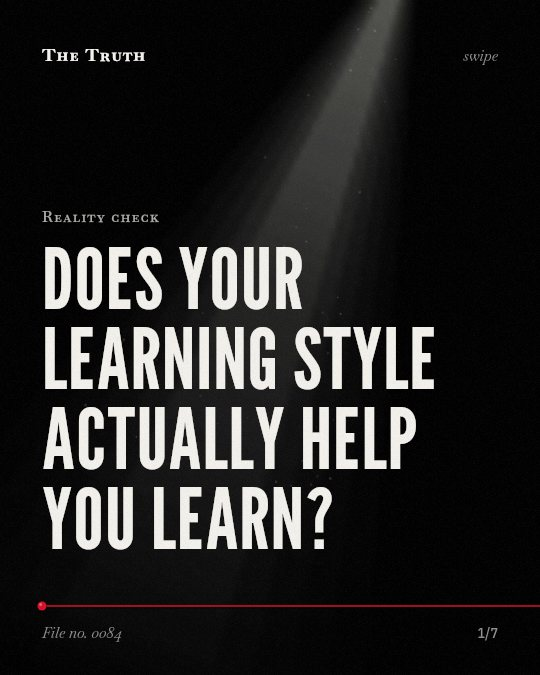

Reality check
Does your learning style actually help you learn?

Only 26% of learning outcome measures show benefits for matched instruction.
The evidence is mixed. While some studies show a small benefit, others show no significant relationship between learning style preference and comprehension or aptitude.
Established. Several studies combined, or official data. The evidence is mixed.
What the research found
A meta-analysis showed that the effect size for the matching hypothesis is d = .04.
“Drawing on 17 meta-analyses, we distinguish between studies testing the matching hypothesis (effect size d = .04) and correlational studies (average correlation r = .24)”
Meta-analysis, 2025. Hattie & O’Leary, Educational Psychology Review.
A meta-analysis found an overall benefit of matching instruction to learning styles of g = 0.31, SE = 0.12, 95% CI = [0.05, 0.57], p = 0.02.
“Based on robust variance estimation, there was an overall benefit of matching instruction to learning styles, g = 0. 31, SE = 0. 12, 95% CI = [0. 05, 0. 57], p = 0. 02.”
Meta-analysis, 2024. Clinton-Lisell & Litzinger, Frontiers in psychology.
An experiment showed no statistically significant relationship between learning style preference and instructional method for either immediate or delayed comprehension tests.
“Results demonstrated no statistically significant relationship between learning style preference (auditory, visual word) and instructional method (audiobook, e-text) for either immediate or delayed comprehension tests.”
Experiment, 2014. Rogowsky et al., Journal of Educational Psychology.
An experiment failed to show a statistically significant relationship between learning style preference and learning aptitude.
“Results failed to show a statistically significant relationship between learning style preference (auditory, visual word) and learning aptitude (listening comprehension, reading comprehension).”
Experiment, 2014. Rogowsky et al., Journal of Educational Psychology.
In a meta-analysis, only 26% of learning outcome measures indicated matched instruction benefits for at least two styles.
“However, only 26% of learning outcome measures indicated matched instruction benefits for at least two styles, indicating a crossover interaction supportive of the matching hypothesis.”
Meta-analysis, 2024. Clinton-Lisell & Litzinger, Frontiers in psychology.
A study found that 32% of participants stated they would continue to use Learning Styles despite being presented with the lack of an evidence base to support them.
“However, a substantial number of participants (32%) stated that they would continue to use Learning Styles despite being presented with the lack of an evidence base to support them”
Observational study, 2017. Newton & Miah, Frontiers in Psychology.
The data does not support the matching hypothesis.
One meta-analysis showed a near-zero effect size of 0.04. Another study found no significant relationship between your preferred style and your actual comprehension of a topic.
Your preferred method may not be your best method.
You might choose a specific way to learn because it feels comfortable. That may be why you continue to use these methods even when the evidence does not support them.
This part is our reading of the evidence, not a finding.
You sit at a desk with a highlighter.
You choose to color the text because you believe it helps you remember. You do this every evening while the room is quiet.
The honest summary
The evidence is mixed, showing a small positive effect in one meta-analysis but no significant results in experimental studies and a near-zero effect size in another meta-analysis.
The quality of many studies on this topic is reported as low, with many using small samples and convenience sampling.
Why do you trust a method that lacks evidence?
Sources
- Clinton-Lisell V, Litzinger C (2024). Is it really a neuromyth? A meta-analysis of the learning styles matching hypothesis. Frontiers in psychology. Meta-analysis, cited 26 times.
- John Hattie, Timothy O’Leary (2025). Learning Styles, Preferences, or Strategies? An Explanation for the Resurgence of Styles Across Many Meta-analyses. Educational Psychology Review. Meta-analysis, cited 46 times.
- Beth A. Rogowsky, Barbara M. Calhoun, Paula Anne Tallal (2014). Matching learning style to instructional method: Effects on comprehension.. Journal of Educational Psychology. Experiment, cited 240 times.
- Philip Mark Newton, Mahallad Miah (2017). Evidence-Based Higher Education – Is the Learning Styles ‘Myth’ Important?. Frontiers in Psychology. Observational study, cited 232 times.
Also read for this file, not quoted
This file was researched and drafted by software, then checked by rules a model cannot talk its way around: each quote above was matched word for word against the paper, and every number had to appear in it. How files are made.